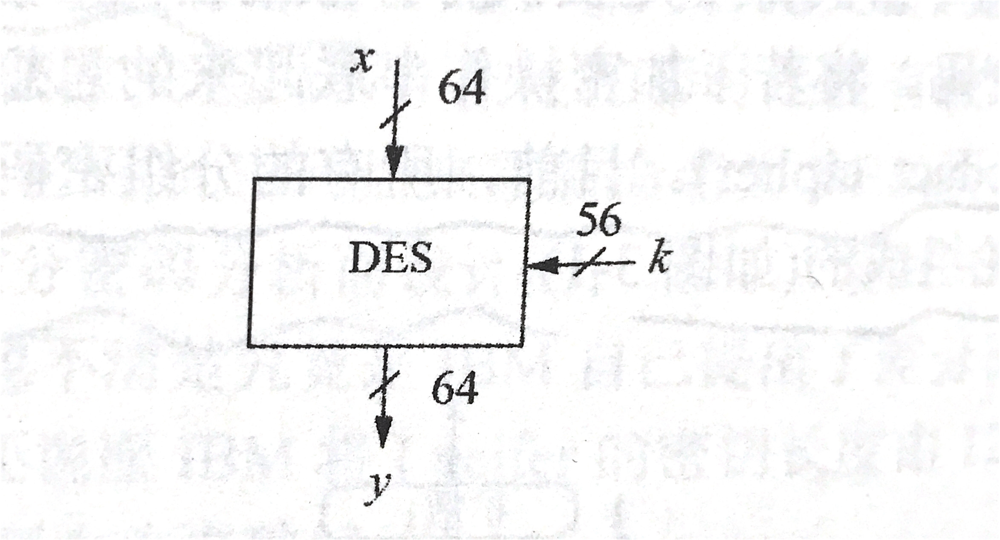
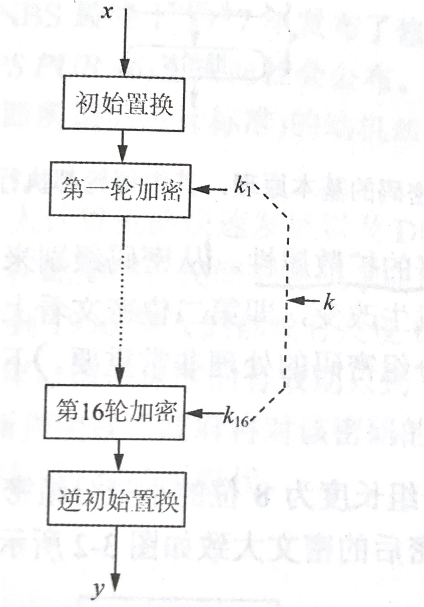
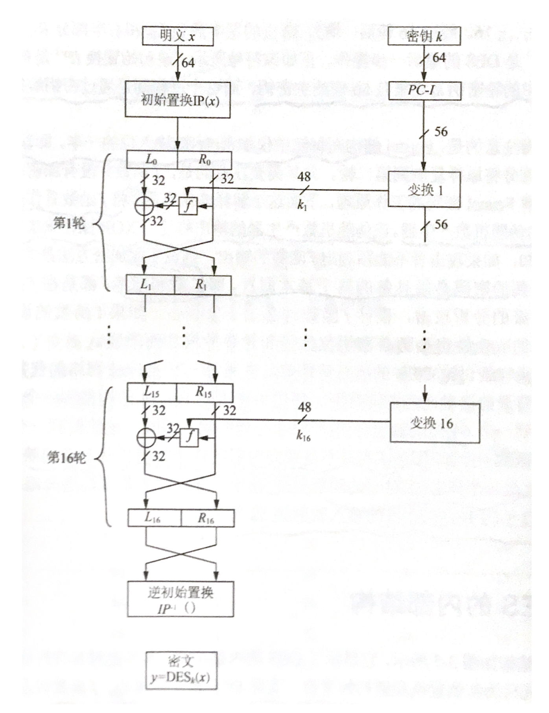
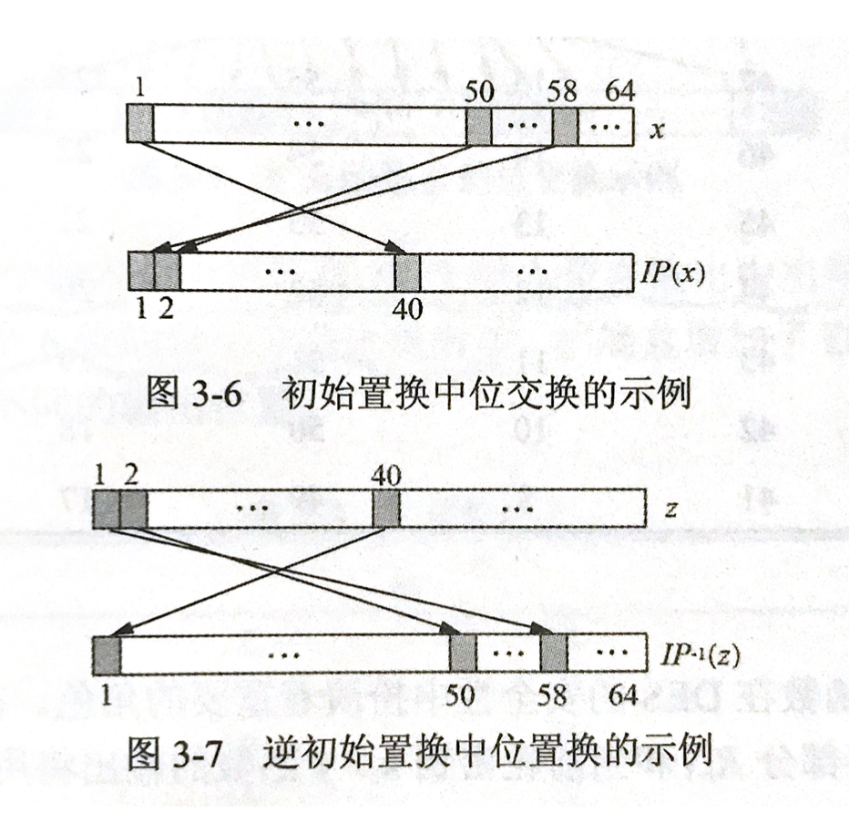
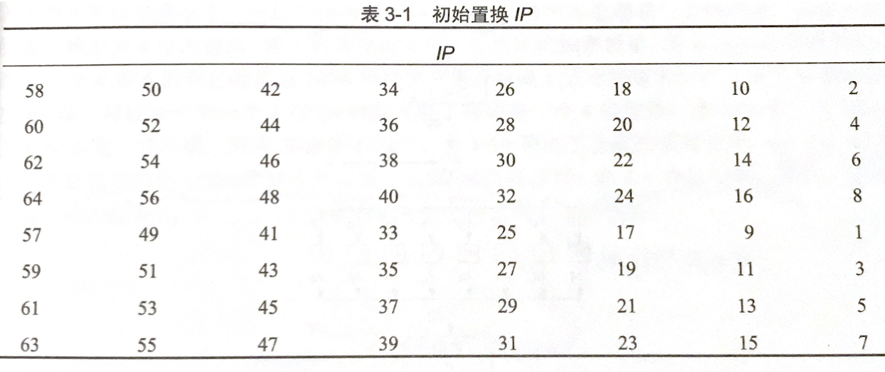
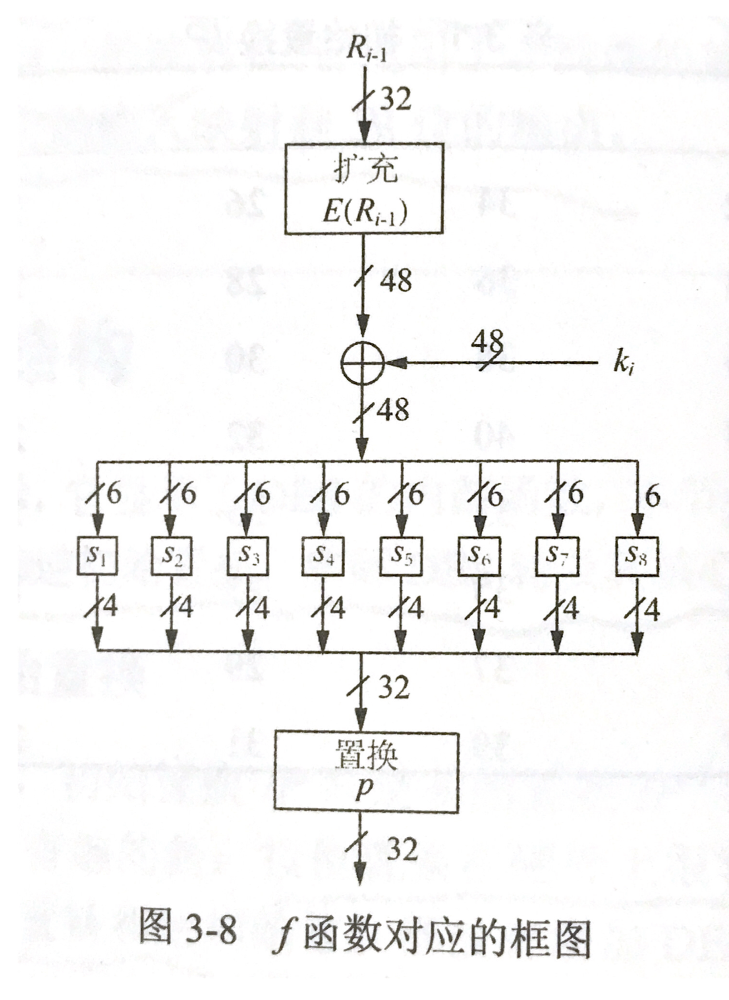
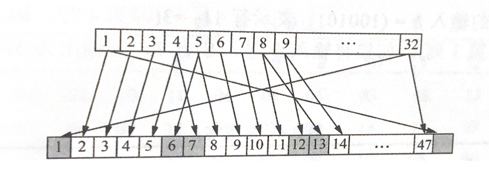
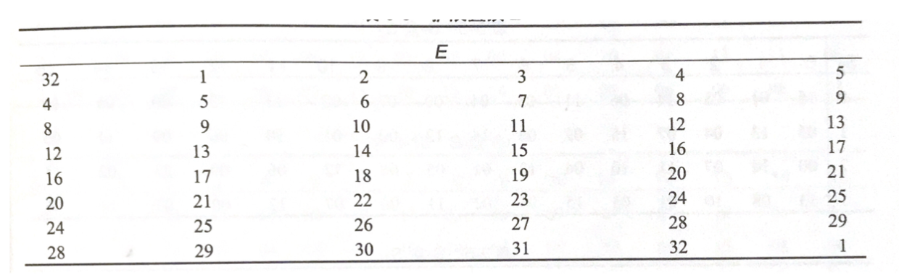

Citation
We will continue to introduce the second camp of symmetric ciphers: block ciphers. Two major events occurred in the computer field in the 1970s, which marked the entry of cryptography into the category of modern cryptography. One is today's main content DES(Data Encryption Standard), and the other is the birth of public key cryptography.
DES(Data Encryption Standard)
History of DES: In 1972, NBS (now NIST) called for the implementation of standard cryptography in the United States. The US government has always believed that cryptography (especially cryptanalysis) is very important to national security. In 1974, NBS found the most suitable candidate from a method provided by a cryptographic resarch group at IBM. The algorithm submitted by IBM is based on the Lucifer cipher, and Lucifer is a cipher family proposed by Horst Feistel in the late 1960s, and is also the first example of a block cipher applied to digital data. Lucifer uses a 128-bit key to encrypt 64-bit block. In order to study the security of the submitted password, NBS sought the help of the NSA, so the NSA affected the modification of the password (this password was later renamed DES) to some extent. One of the modifications is: DES is specifically designed to resist differential cryptanalysis.
Confusion and Diffusion
According to the famous information theorist Claude Shannon, strong encryption algorithms are based on the following two primitive opearations: - Confusion: It is an encryption operation that makes the relationship between the key and the ciphertext as obscure as possible. One element that is commonly used to achieve confusion today is replacement. - Diffusion: It is an encryption operation that spreads the influence of one plaintext symbol to multiple ciphertext symbols in order to hide the statistical properties of the plaintext. The simplest diffusion element is position swap.
It is worth noting that a cipher that only performs diffusion is insecure. Therefore, Shannon proposed that the diffusion operation can be connected in series to form a stronger cipher, such a cipher is also called a Product cipher. All current block ciphers are product ciphers because they are composed of rounds of repeated operations on data. From the cipher level, this means that modifying 1 bit in the plaintext will cause an average of half of the output bits to change, that is, the second ciphertext looks completely unrelated to the first ciphertext. What needs to be kept in mind is that this attribute is critical to the processing of block ciphers.
waring: The commonly used block length of modern block ciphers is 64 or 128 bits, but if an input bit is inverted, the behavior of block ciphers with different block lengths is the same.
DES algorithm overview
DES is a cipher that uses a 56-bit key to encrypt a 64-bit long block.

DES is a symmetric cipher, that is, the encryption process and the decryption process use the same key. Like almost all block encryption, DES is also an iterative algorithm. The DES encryption process for each packet in the plaintext includes 16rounds, and the operation of each round is the same. It is worth noting that a different word key is used in each round, and all word keys \(k_i\) are derived form the master key \(k\).

The internal structure of DES is called Feistel network. If Feistel network is well designed, it will get very strong passwords. Many modern ciphers use Feistel network(in fact, AES is not Feistel network). Another advantange of Feistel network is that its encryption process is almost identical to the decryption process. The decrption of DES only require a reverse key arrangement, which is implemented in software and hardware.

After the 64-bit plaintext \(x\) is initially changed to IP(x) by position, the plaintext will be divided into two parts, \(L_0\) and \(R_0\). Then input the obtained 32-bit left and right parts into Feistel network, which includes 16 operations. The right half \(R_i\) is fed into the function f, the output of the f function will be XOR with the 32-bit left half \(L_i\). Finally, the left and right parts are exchanged, and this process is repeated for each subsequent round, which can be expressed as:
\[ L_i = R_{i-1}, \]
\[ R_i = L_{i-1} \oplus f(R_{i-1}, k_i) \]
The round key k in each round comes from the 56-bit master key. And this process is realized through key schedule. In DES, the f function is actually a full mapping, which uses a non-linear basic structure grouping, and uses a 48-bit round cipher to map a 32-bit input to a 32-bit output.
DES internal structure
Initial permutation and inverse initial permutation
It is easy to change by position in hardware, but not easy in software. It is worth nothing that neither initial permutation nor inverse initial permutation increases the security of DES.


f function

Extension function E:  
As can be seen from the table, exactly 16 of the 32 input bits appear twice in the output. But any input bit will not appear twice in the same 6-bit output group.
S-BOX:
Then perform XOR operation between the 48-bit result of the expansion and the round key \(k_i\), and send 8 6-bit long packets into 8 different replacement boxes. This replacement box is called S-BOX.